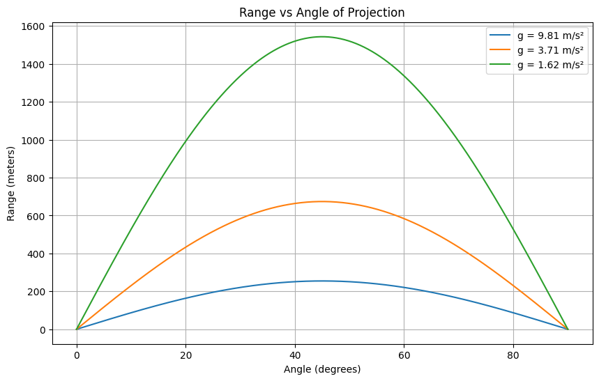
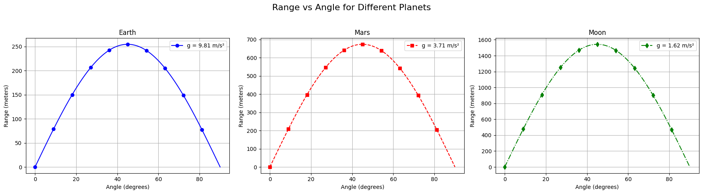

import numpy as np import matplotlib.pyplot as plt
g = 9.81 # acceleration due to gravity (m/s^2)
def projectile_path(v0, angle_deg, g=9.81): theta = np.radians(angle_deg) t_flight = 2 * v0 * np.sin(theta) / g t = np.linspace(0, t_flight, 300) x = v0 * np.cos(theta) * t y = v0 * np.sin(theta) * t - 0.5 * g * t**2 return x, y
=== Case (a): Varying initial speed at 45° ===
angles_case_a = [45] # constant angle speeds_case_a = [30, 40, 50]
=== Case (b): Varying angle at fixed speed of 50 m/s ===
v0_case_b = 50 angles_case_b = [15, 45, 75]
Plotting both subfigures
fig, (ax1, ax2) = plt.subplots(2, 1, figsize=(12, 10))
Subplot (a)
for v0 in speeds_case_a: x, y = projectile_path(v0, 45) ax1.plot(x, y, label=f'{v0} m/s') ax1.set_title('(a) Varying Initial Speed at 45°') ax1.set_xlabel('Horizontal Distance (m)') ax1.set_ylabel('Vertical Distance (m)') ax1.legend() ax1.grid(True) ax1.set_xlim(0, 270) ax1.set_ylim(0, 70)
Subplot (b)
for angle in angles_case_b: x, y = projectile_path(v0_case_b, angle) ax2.plot(x, y, label=f'{angle}°') ax2.set_title('(b) Fixed Speed (50 m/s) at Different Angles') ax2.set_xlabel('Horizontal Distance (m)') ax2.set_ylabel('Vertical Distance (m)') ax2.legend() ax2.grid(True) ax2.set_xlim(0, 270) ax2.set_ylim(0, 140)
plt.tight_layout() plt.show()
```

Colab